ISO Installation
|
A critical vulnerability in the SUSE Virtualization interactive installer allows attackers to gain remote shell (SSH) access to the host. If your environment is exposed to untrusted locations, you must either upgrade to v1.7 and use the corresponding interactive installer, or use the PXE boot installation mechanism when creating or expanding clusters. For more information, see the security advisory for CVE-2025-62877. |
SUSE Virtualization ships as a bootable appliance image, you can install it directly on a bare metal server with the ISO image. To get the ISO image, download 💿 harvester-v1.x.x-amd64.iso from the Releases page.
During the installation, you can either choose to create a new cluster or join the node to an existing cluster.
The following video shows a quick overview of an ISO installation.
Installation Steps
-
Mount the ISO file and boot the server by selecting the
Harvester Installeroption.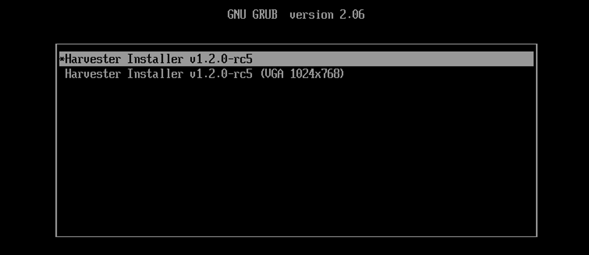The installer automatically checks the hardware and displays warning messages if the minimum requirements are not met. The Hardware Checks screen is not displayed if all checks are passed.
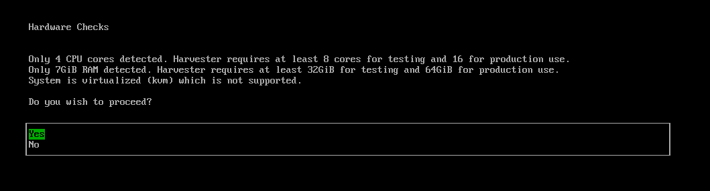 -
Use the arrow keys to choose an installation mode. By default, the first node will be the management node of the cluster.
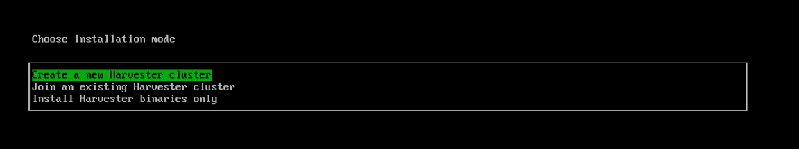-
Create a new Harvester cluster: creates an entirely new cluster. -
Join an existing Harvester cluster: joins an existing cluster. You need the VIP and cluster token of the cluster you want to join. -
Install Harvester binaries only: If you choose this option, additional setup is required after the first bootup.
When there are 3 nodes, the other 2 nodes added first are automatically promoted to management nodes to form an HA cluster. If you want to promote management nodes from different zones, you can add the node label
topology.kubernetes.io/zonein the os.labels config by providing a URL of configuration file on the customize the host step. In this case, at least three different zones are required. -
-
Choose a role for the node. You are required to perform this step if you selected the installation mode
Join an existing Harvester cluster.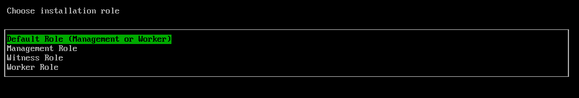-
Default Role: Allows a node to function as a management node or a worker node. This role does not have any specific privileges or restrictions. -
Management Role: Allows a node to be prioritized when SUSE Virtualization promotes nodes to management nodes. -
Witness Role: Restricts a node to being a witness node (only functions as an etcd node) in a specific cluster. -
Worker Role: Restricts a node to being a worker node (never promoted to management node) in a specific cluster.
-
-
Choose the installation disk you want to install the cluster on and the data disk you want to store VM data on. By default, SUSE Virtualization uses GUID Partition Table (GPT) partitioning schema for both UEFI and BIOS. If you use the BIOS boot, then you will have the option to select Master boot record (MBR).
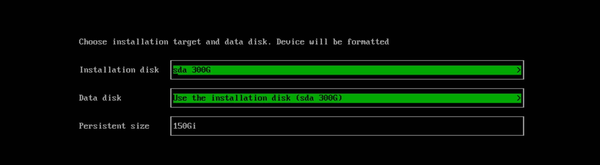-
Installation disk: The disk to install the cluster on. -
Data disk: The disk to store VM data on. Choosing a separate disk to store VM data is recommended. -
Persistent size: If you only have one disk or use the same disk for both OS and VM data, you need to configure persistent partition size to store system packages and container images. The default and minimum persistent partition size is 150 GiB. You can specify a size like 200Gi or 153600Mi.
-
-
Configure the
HostNameof the node.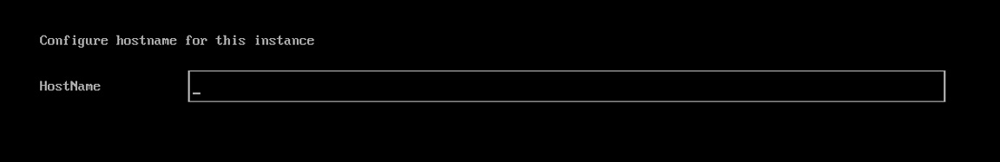 -
Configure network interface(s) for the management network. By default, SUSE Virtualization creates a bonded NIC named
mgmt-bofor the built-in management cluster network, and the IP address can be configured via DHCP or statically assigned.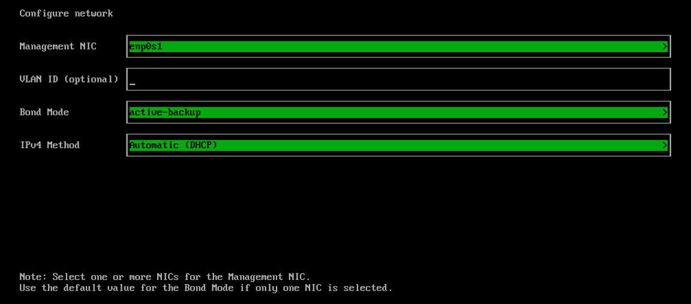It is not possible to change the node IP throughout the lifecycle of a cluster. If using DHCP, you must ensure the DHCP server always offers the same IP for the same node. If the node IP is changed, the related node cannot join the cluster and might even break the cluster.
In addition, you are required to add the routers option (
option routers) when configuring the DHCP server. This option is used to add the default route on the host. Without the default route, the node will fail to start.For example:
Linux~ # ip route default via 192.168.122.1 dev mgmt-br proto dhcp
For more information, see DHCP Server Configuration.
-
(Optional) Configure the CIDRs for the cluster pods and services.
To use the default values, leave the fields blank.
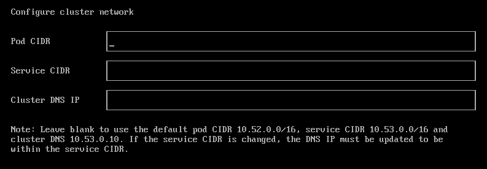The CIDR values must not overlap and must be within the private IP address range of 10.0.0.0/8, 172.16.0.0/12, or 192.168.0.0/16.
The DNS service IP must be within the range defined by the Service CIDR field.
Example of a valid CIDR configuration:
-
Pod CIDR: 172.16.0.0/16
-
Service CIDR: 172.22.0.0/16
-
Cluster DNS IP: 172.22.0.10
-
-
(Optional) Configure the
DNS Servers. Use commas as a delimiter to add more DNS servers. Leave it blank to use the default DNS server.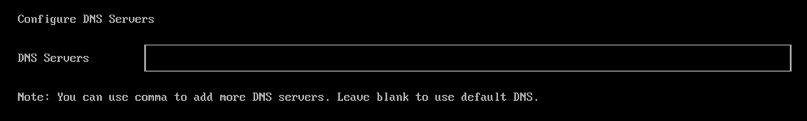 -
Configure the virtual IP (VIP) by selecting a
VIP Mode. This VIP is used to access the cluster or for other nodes to join the cluster.For DHCP setup with static MAC-to-IP address mappings configured, enter the MAC address in the provided field to fetch the unique persistent virtual IP (VIP). Otherwise, leave it blank.
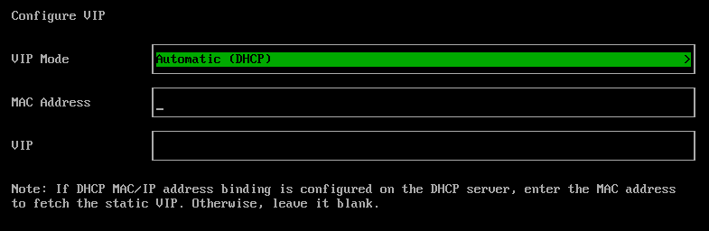 -
Configure the
Cluster token. This token is used for adding other nodes to the cluster.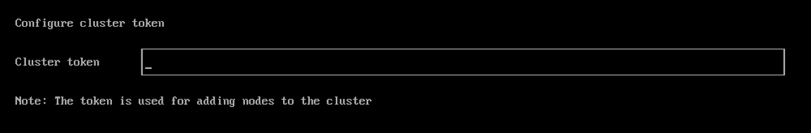 -
Configure and confirm a
Passwordto access the node. The default SSH user israncher.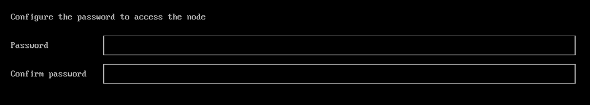 -
Configure
NTP serversto make sure all nodes' times are synchronized. This defaults to0.suse.pool.ntp.org. Use commas as a delimiter to add more NTP servers.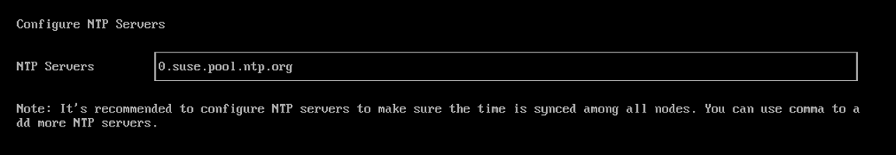Using multiple NTP servers provides redundancy, better accuracy, fault tolerance, and improved performance. It ensures that time synchronization continues even if one server fails or gives incorrect data, and helps distribute the load across different servers.
-
(Optional) If you need to use an HTTP proxy to access the outside world, enter the
Proxy address. Otherwise, leave this blank.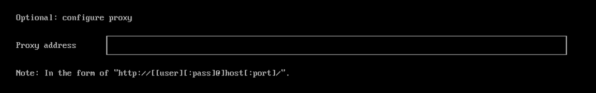 -
(Optional) You can choose to import SSH keys by providing
HTTP URL. For example, your GitHub public keyshttps://github.com/<username>.keyscan be used.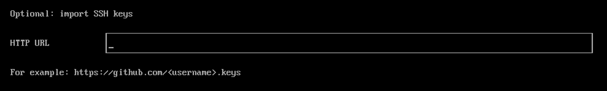 -
(Optional) If you need to customize the host with a configuration file, enter the
HTTP URLhere.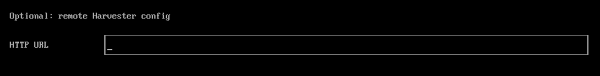 -
Review and confirm your installation options. After confirming the installation options, SUSE Virtualization will be installed to your host. The installation may take a few minutes to be complete.
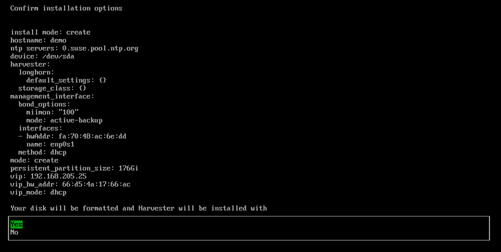 -
Once the installation is complete, your node restarts. After the restart, the console displays the management URL and status. The default URL of the web interface is
https://your-virtual-ip. You can useF12to switch from the console to the Shell and typeexitto go back to the console.Choosing
Install Harvester binaries onlyon the first page requires additional setup after the first bootup.
-
You will be prompted to set the password for the default
adminuser when logging in for the first time.
Known Issue
Installer may crash when using an older graphics card/monitor
In some cases, if you are using an older graphics card/monitor, you may encounter a panic: invalid dimensions error during ISO installation.
We are working on this known issue and planning a fix for a future release. You can try to use another GRUB entry to force it to use the resolution of 1024x768 when booting up.
If you are using a version earlier than v1.1.1, please try the following workaround:
-
Boot up with the ISO, and press
Eto edit the first menu entry: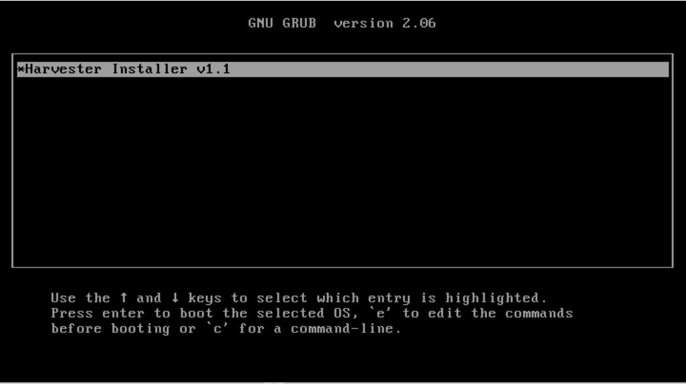 -
Append
vga=792to the line started with$linux: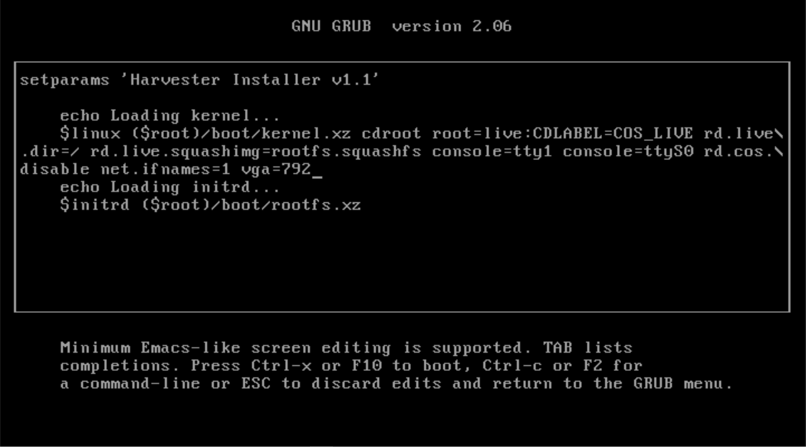 -
Press
Ctrl+XorF10to boot up.